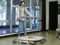

'98NHKロボットコンテスト
98年7月製作開始、マシンネーム「METAL-MATRIX」
その意味はドイツ語・英語で「母体」。「生み出す」という観点から
つけられました。
脚まわりは180°回転可能なステアリングとRS540を使用した高速かつ高トルクな駆動系による4WSのような2WD。
また、操作性向上・種子の落下防止のためにPWM無段変速制御。
種子はPIC仕様ととH8仕様の2系統。
PIC種子の方はカラーセンサーと回転数カウンタにより確実に止まり、生命を生みだす。
H8種子の方もカラーセンサーを積んでおり、さらに光電センサーにより敵を見つけて排除！！
肝心の結果はというと・・・、東北大会一回戦敗退でした・・・。(^^;)
応援してくださったみなさま、本当にすいませんでした。m()m
下は親機写真。
 METAL-MATRIX前方
METAL-MATRIX前方
伝統のベース型コントローラ
 ターンテーブル
ターンテーブル

オペレータと本体
HOME

 ターンテーブル
ターンテーブル